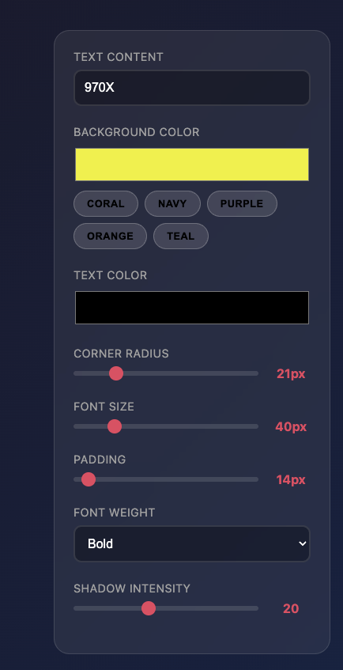

Subway Animation Maker
A project for building and animating transit systems
Introduction
This is an animation player that projects the movement of vehicles in transit systems. You can open it here:
Transit Animation Player
The player takes in JSON files, which can be edited through an editor here:
JSON editor
Below are some pre-made JSON files:
- Hong Kong MTR (Off-peak hours)
- Hong Kong MTR Light Rail (Peak hours)
- Hong Kong MTR South Island Line (West) (Future) VS existing transit
- Chicago L (Off-peak hours)
In addition, these JSON files can be generated by scripts that take in GTFS and GeoJSON data.
Other links:

Animations
The following are some animations I made:Inspirations
- @Briaduct on Instagram
- Anita Chen (anita.garden)
- Mini Tokyo 3D
Information
This is a projection of what the movement of vehicles might look like, not a real-time simulation. I try to make the following realistic:
- Travel times (from the start to the end)
- Headways
- Departing times (for scheduled transit systems)
- Travel times between specific stations
- Delays
- Traffic lights (for road vehicles)
- Slow zones (for some systems)